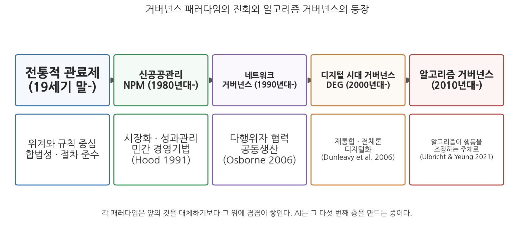
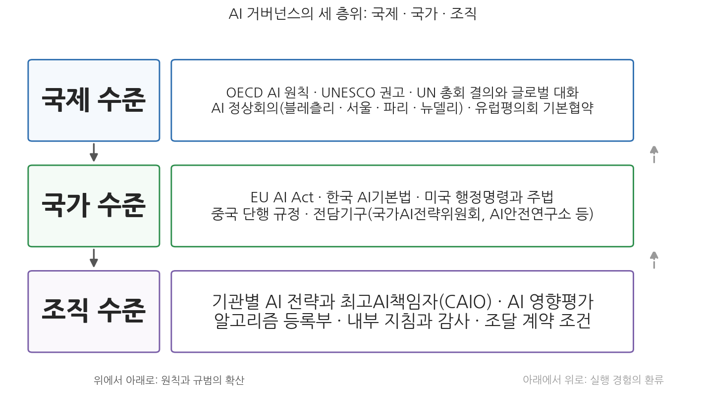

10주차 1차시. AI와 거버넌스 (1): 개념과 층위
업무를 처리하는 조직은 더 이상 실질적인 통제력의 대부분을 꼭대기에 둔 위계적 피라미드가 아닐 것이다. 그들은 통제가 느슨하고 권력이 분산되어 있으며 의사결정의 중심이 복수인, 긴장의 얽힌 그물망과 같은 시스템이 될 것이다. (할런 클리블랜드 Harlan Cleveland, 1972; Frederickson 2008에서 재인용)
이 장에서 배우는 것
2020년 2월, 네덜란드 헤이그 지방법원은 정부가 운영하던 복지 부정수급 위험 탐지 시스템 SyRI(System Risk Indication)의 사용을 중단하라고 판결했다. SyRI는 여러 행정기관의 데이터를 연계해 "부정수급 위험이 높은 사람"을 알고리즘으로 골라내는 시스템이었는데, 법원은 이것이 유럽인권협약 제8조가 보장하는 사생활 존중권을 침해한다고 보았다. 흥미로운 것은 이 결론에 이르는 과정이다. 소송을 제기한 것은 정부도 의회도 아닌 시민단체와 노동조합의 연합이었고, 재판 과정에는 UN 극빈·인권 특별보고관이 의견서를 제출했으며, 판단의 잣대는 국내법이 아니라 유럽 차원의 인권 규범이었다. 한 나라의 행정 시스템 하나를 멈춰 세우는 데 시민사회, 국제기구, 초국가적 규범, 법원이 모두 등장한 것이다.
이 장면은 이번 주의 주제를 압축해서 보여 준다. AI를 공익에 맞게 규율하는 일은 어느 한 정부 부처가 지시 한 장으로 해낼 수 있는 일이 아니다. 국제기구가 원칙을 만들고, 국가가 법을 제정하며, 개별 기관이 내부 절차를 갖추고, 기업과 시민사회가 그 사이에서 밀고 당기는, 여러 층위와 여러 행위자의 게임이다. 행정학은 이런 게임을 오래전부터 거버넌스(governance)라는 개념으로 불러 왔다. 동시에 정반대 방향의 질문도 있다. AI는 규율의 대상이기만 한 것이 아니라, 그 자체가 통치의 도구가 되어 거버넌스의 모습을 바꾸고 있기 때문이다. 9주차에서 본 AI 영향평가가 "개별 시스템을 어떻게 점검하는가"의 도구였다면, 이번 주는 그 도구들이 놓이는 더 큰 판, 곧 거버넌스의 구조를 본다. 구체적으로 다음을 배운다.
- 정부와 거버넌스는 어떻게 다르며, AI 거버넌스라는 말에는 어떤 두 가지 뜻이 겹쳐 있는가
- 행정학의 거버넌스 패러다임(신공공관리, 네트워크 거버넌스, 디지털 시대 거버넌스)은 어떻게 진화해 왔고, 알고리즘 거버넌스는 그 계보의 어디에 놓이는가
- AI 거버넌스는 국제, 국가, 조직의 세 층위에서 어떻게 작동하는가
- 윤리원칙은 왜 그것만으로는 부족하며, 원칙을 실행으로 옮기는 제도화의 경로는 무엇인가
- AI 거버넌스에는 누가 참여해야 하며, 참여를 보장하는 장치에는 무엇이 있는가
이 장은 하나의 질문을 따라 전개된다. "AI를 공익에 맞게 다루는 일은 왜 '정부'가 아니라 '거버넌스'의 문제인가?"
1.1 정부와 거버넌스를 구별하고 AI 거버넌스의 두 얼굴을 본다 → 1.2 신공공관리에서 알고리즘 거버넌스까지, 거버넌스 패러다임의 진화를 따라간다 → 1.3 국제·국가·조직의 세 층위로 AI 거버넌스의 지도를 그린다 → 1.4 윤리원칙의 한계와 제도화의 경로를 따진다 → 1.5 이해관계자와 참여의 문제를 살핀다. 다음 차시에서는 이 지도 위에 실제 국내외 체계를 채워 넣는다.
1.1 AI 거버넌스란 무엇인가: 정부에서 거버넌스로
정부와 거버넌스는 다르다
정부(government)와 거버넌스는 일상에서 흔히 섞여 쓰이지만, 행정학에서는 서로 다른 것을 가리킨다. 정부는 국가를 통치하고 관리할 권한을 가진 특정한 제도와 집단, 곧 공식적 권위의 소재지를 지칭한다. 정부의 활동은 정당하게 제정된 정책의 이행을 강제할 수 있는 공권력에 의해 뒷받침된다(Peters, 1999). 반면 거버넌스는 통치라는 행위 그 자체를 더 넓게 포괄하는 개념이다. 거버넌스는 공식적 책임에서 비롯될 수도 있고 그렇지 않을 수도 있는, 공동의 목표에 의해 뒷받침되는 활동을 의미하며, 순응을 얻기 위해 반드시 공권력에 의존하지 않는다. 정부 기관만이 아니라 그 범위 안의 개인과 조직이 필요를 충족해 가는 비공식적·비정부적 메커니즘까지 포괄하는 것이다(Rosenau & Czempiel, 1992).
말의 뿌리를 보면 개념의 핵심이 드러난다. 거버넌스라는 단어는 14세기 프랑스에서 처음 쓰였고, 더 거슬러 올라가면 "배의 키를 잡는다"는 뜻의 그리스어 퀴베르난(kybernan)에서 왔다(Medury, 2010). 배를 움직이는 힘이 모두 키잡이에게서 나오는 것은 아니다. 바람과 조류, 선원들의 노동이 함께 배를 밀고, 키잡이는 그 힘들의 방향을 조율한다. 거버넌스 개념이 담고 있는 통치의 상이 바로 이것이다. 피에르와 페터스는 거버넌스를 간명하게 "의사결정의 과정, 그리고 그 결정이 이행되거나 이행되지 않는 과정"으로 정의하면서, 이 용어가 정부가 통치하는 방식에서 일어나고 있는 포착하기 어렵지만 중요한 변화를 가리킨다고 지적했다(Pierre & Peters, 2000).
행정학에서 이 용어를 공공행정의 대안적 상으로 처음 끌어들인 인물로는 미국의 행정가이자 학자인 할런 클리블랜드가 꼽힌다. 그는 1972년, 이 장의 첫머리에 인용한 문장으로 미래의 조직을 예언했다. 통제력이 꼭대기에 집중된 피라미드가 아니라, 권력이 분산되고 의사결정의 중심이 여럿인 그물망. 그리고 조직이 수평화될수록 관리는 더 협력적이고 합의적이며 협의적인 것이 되리라는 전망이었다(Frederickson, 2008). 로즈는 이를 이어 거버넌스를 "정부의 의미의 변화, 곧 사회가 통치되는 새로운 방법"이라 정의했고(Rhodes, 1997), 쿠이만은 위계와 시장의 한계를 넘어 복잡한 사회 시스템 안에서 행동을 조정하는 국가의 역할을 강조했다(Kooiman, 2000). 요컨대 거버넌스에서 권력은 행사되기보다 공유되는 경우가 많고, 권위는 통치자의 통제보다 피치자의 동의와 참여로 정의된다. 거버넌스는 단순히 정부에 관한 것이 아니라 국가, 시장, 시민사회 사이의 관계를 재구축하는 문제다.
거버넌스(governance)는 다수의 행위자와 조직이 존재하고 어느 하나의 공식적 통제 시스템이 이들 사이의 관계를 일방적으로 지시할 수 없는 환경에서, 집단적 의사결정이 이루어지는 규칙과 과정을 뜻한다(Chhotray & Stoker, 2009). 정부가 누가 다스리는가의 문제라면, 거버넌스는 어떻게 다스려지는가의 문제이며, 그 "어떻게"에는 정부 바깥의 행위자(기업, 시민사회, 국제기구)와 비공식적 메커니즘(규범, 표준, 자율규약)이 함께 들어온다.
AI 거버넌스의 두 얼굴
그렇다면 AI 거버넌스란 무엇인가. 이 말에는 방향이 반대인 두 가지 뜻이 겹쳐 있고, 이 구별이 이번 주 전체의 뼈대가 된다.
첫째는 AI의 거버넌스(governance of AI)다. AI라는 기술을 사회가 어떻게 규율할 것인가, 곧 AI가 안전하고 공정하며 책임 있게 개발·활용되도록 원칙, 법, 제도, 감독 장치를 설계하는 문제다. 우리가 2주차부터 지금까지 본 가치들의 목록이 그대로 이 거버넌스의 의제가 된다. 3주차의 투명성, 4주차의 책임성, 5주차의 형평성, 7주차의 프라이버시를 지키도록 AI를 다루는 틀을 만드는 일이다.
둘째는 AI에 의한 거버넌스(governance by AI)다. AI가 통치의 도구가 되어 거버넌스 자체의 작동 방식을 바꾸는 현상이다. 울브리히트와 융은 알고리즘이 공동의 목표를 달성하기 위해 타인의 행동을 조정하는 기능을 수행하도록 설계·배포될 때 이를 알고리즘 거버넌스라 부를 수 있다고 정의했는데(Ulbricht & Yeung, 2021), 이때 알고리즘은 단순한 정보 제공자가 아니라 조정과 결정의 주체 자리에 다가선다. 8주차에서 본 자동화된 행정처분이나 정책 시뮬레이션이 이 흐름의 사례들이다.
두 얼굴은 서로를 부른다. AI가 통치의 도구가 될수록(by) 그 도구를 규율할 필요(of)가 커지고, 규율의 틀을 만드는 과정 자체가 다시 데이터와 알고리즘에 기대게 된다. 이 장과 다음 장의 초점은 첫째 의미, 곧 AI를 규율하는 거버넌스에 있지만, 1.2절에서 보듯 둘째 의미를 알아야 첫째 의미가 왜 어려운지를 이해할 수 있다.
AI 거버넌스(AI governance)는 AI의 개발과 활용이 공동체의 가치와 공익에 부합하도록 방향을 잡는 원칙, 규범, 법제도, 조직적 장치의 총체다. 여기에는 (1) 국제기구의 원칙과 권고, (2) 국가의 법률·전담기구·감독 체계, (3) 개별 조직의 내부 전략·책임자·심사 절차가 모두 포함되며, 정부만이 아니라 기업, 연구자, 시민사회가 함께 참여하는 다층적·다행위자적 과정이라는 점에서 "AI 규제"보다 넓은 개념이다. 규제는 거버넌스가 쓰는 여러 도구 가운데 하나이며, 11주차에서 따로 다룬다.
1.2 거버넌스 패러다임의 진화: 관료제에서 알고리즘까지
AI 거버넌스를 이해하려면 행정학이 거쳐 온 거버넌스 패러다임의 계보 위에 그것을 놓아 보아야 한다. 새 패러다임은 앞의 것을 완전히 대체하기보다 그 위에 겹겹이 쌓여 왔고, AI는 지금 그 가장 새로운 층을 만드는 중이기 때문이다.

그림 10-1을 읽는 법은 이렇다. 위 줄의 다섯 상자가 행정학이 식별해 온 거버넌스 패러다임과 그 등장 시기이고, 아래 상자는 각 패러다임의 핵심 특징과 대표 문헌이다. 이 그림에서 알 수 있는 것은 두 가지다. 첫째, 오늘의 행정은 어느 한 패러다임의 순수한 구현이 아니라 다섯 층의 퇴적물이다. 둘째, 알고리즘 거버넌스는 갑자기 나타난 것이 아니라 디지털 시대 거버넌스가 깔아 놓은 기반 위에서 자라났다.
신공공관리: 시장과 성과
출발점은 1980년대의 신공공관리(New Public Management, NPM)다. NPM은 재정 위기와 전통 관료제의 비효율에 대한 대응으로 등장했으며, 민간 부문의 경영 기법과 신자유주의적 아이디어를 기초로 발전했다(Hood, 1991). 핵심은 시장화, 곧 공공서비스에 시장 메커니즘과 경쟁을 도입하는 것과 기업식 경영 기법의 이식이다. NPM 개혁은 거대 관료조직을 작은 단위로 분권화하고, 서비스의 아웃소싱과 경쟁입찰을 장려하며, 성과급 같은 인센티브로 성과 중심 문화를 조성했다(Dunleavy et al., 2006). 정부의 역할에 대한 유명한 은유도 이 시기의 것이다. 정부는 "노를 젓기보다 방향을 잡는(steer rather than row)" 존재, 곧 직접 서비스를 제공하기보다 전략가와 규제자로 서야 한다는 것이다. 그 결과 중 하나가 규제 거버넌스의 부상이다. 국가의 역할이 직접 공급에서 규칙 설정과 감시로 이동하면서 독립 규제기관의 설립이 세계적으로 보편화되었는데(Versluis, 2016), 이는 뒤에서 보게 될 "AI 전담 감독기구" 논의의 먼 원형이기도 하다.
네트워크 거버넌스와 협력적 거버넌스
NPM은 효율과 비용 절감의 가치를 행정에 깊이 심었지만, 서비스의 분절화와 형평성·책임성에 대한 우려도 함께 남겼다. 이에 대한 응답으로 등장한 것이 네트워크 거버넌스(network governance), 혹은 새로운 공공 거버넌스(New Public Governance)다. 정책 과정에서 다양한 행위자 간의 협력을 강조하는 접근으로(Osborne, 2006), 위계적 통제나 순수한 시장 방식 대신 정부 기관, 민간 기업, 비영리단체, 시민사회가 상호 연결되어 의사결정을 공동으로 내리는 협력적 거버넌스를 지향한다(Ansell et al., 2024). 여기서 공공 목표의 달성은 여러 조직의 파트너십과 공동생산(co-production)을 통해 이루어진다. 보건이나 환경 같은 복잡한 사회문제(wicked problem)는 단일 기관이 아니라 다수 조직의 네트워크 협력으로 다루어지는 경우가 많기 때문이다.
협력적 거버넌스에서의 협력은 자율적인 이해관계자 사이의 제도화된 숙의(deliberation)를 뜻한다. 서로 다른 자원, 지식, 권한을 가진 행위자들이 상호의존성을 전제로 대면 상호작용과 신뢰 형성, 공동의 규범 구축을 통해 합의를 도출하는 것이 핵심이다(Ansell & Gash, 2008). 뒤에서 보겠지만, AI 거버넌스가 "민·관·학·시민의 파트너십"을 요구한다는 주장은 바로 이 이론적 계보 위에 서 있다.
디지털 시대 거버넌스
2000년대 이후 디지털 기술과 전자정부의 발전은 디지털 시대 거버넌스(Digital Era Governance, DEG)라는 개념으로 이어졌다. 던리비와 그 동료들은 DEG가 NPM이 낳은 파편화를 극복하고 공공서비스를 재중앙화하거나 효과적으로 통합할 수 있다고 주장하면서, 그 핵심을 셋으로 요약했다(Dunleavy et al., 2006; Dunleavy & Margetts, 2010). 재통합(분산되었던 기능과 기관을 정부의 통제 아래 다시 모으기), 전체론(부서가 아니라 시민의 필요를 중심으로 조직을 재구조화하기), 디지털화(디지털 저장소와 인터넷을 행정의 기본 채널로 삼기)다. NPM이 분산화를 강조했다면 DEG는 원스톱 정부 포털처럼 기술을 활용해 권한을 재중앙화하고 사용자 중심 설계를 강조한다. 던리비와 마게츠는 주요국 정부에서 DEG가 2000년에서 2005년경부터 NPM을 사실상 대체했다고 평가했다.
여기서 주의할 것이 있다. 협력적 거버넌스와 DEG는 둘 다 "협력"을 말하지만 그 성격이 다르다. 표 10-1이 그 차이를 요약한다.
표 10-1. 협력적 거버넌스와 디지털 시대 거버넌스의 비교
| 구분 | 협력적 거버넌스 (CG) | 디지털 시대 거버넌스 (DEG) |
|---|---|---|
| 협력의 본질 | 숙의적, 신뢰 기반의 공동 문제 해결 | 데이터 기반, 자동화된 시스템 통합 |
| 참여자 | 공공기관, 민간, 시민사회, 시민 등 | 정부 부처 간, 때때로 시민 포함 |
| 협력 방식 | 대화, 합의 형성, 공동 의사결정 | 정보 공유, 시스템 연계, 플랫폼 운영 |
| 주요 기반 | 상호 신뢰, 공동 규범 | ICT 인프라, 기술적 상호운용성 |
| 목적 | 공공 문제 해결 및 공동 거버넌스 | 효율적 서비스 제공 및 조직 간 연계 |
| 적용 사례 | 수질 관리, 지역 복지 협의체 | 정부24, 디지털 민원 처리 시스템 |
CG의 협력이 사람들 사이의 숙의라면 DEG의 협력은 시스템들 사이의 연계에 가깝고, 절차적이고 기술 중심적이며 때로는 시스템 간 자동 통신의 형태로 구현된다. AI 거버넌스를 설계할 때 이 구별은 실천적인 함의를 갖는다. 데이터와 시스템을 연계하는 일(DEG형 협력)만으로는 가치의 충돌을 조정할 수 없고, 가치의 조정에는 숙의(CG형 협력)가 필요하기 때문이다.
알고리즘 거버넌스: 다섯 번째 층
2010년대 들어 AI, 기계학습, 빅데이터 분석이 공공행정에 영향을 미치기 시작하면서 알고리즘 거버넌스(algorithmic governance)라는 개념이 등장했다. NPM이나 DEG 같은 단일한 통합 이론은 아직 없지만, 알고리즘 거버넌스는 알고리즘이나 자동화 시스템의 도움을 받아 이루어지는 거버넌스 과정과 의사결정을 가리킨다(Ulbricht & Yeung, 2021). 여기서 알고리즘의 위상 변화에 주목해야 한다. 정보를 제공해 인간의 결정을 돕던 도구가 점차 결정의 주체 쪽으로 이동하는 것이다. 이런 극단을 가리키는 알고크라시(algocracy), 곧 "알고리즘에 의한 지배"라는 말도 만들어졌다.
알고리즘 거버넌스는 기존 패러다임을 보완하는 동시에 뒤흔든다. 한편으로 효율성과 데이터 기반 의사결정을 향상시켜 NPM 이래의 오랜 목표에 봉사한다. 다른 한편으로 공공행정에서 누가, 또는 무엇이 재량을 행사하는지를 바꾼다. 관리자가 핵심 행위자였던 NPM과 달리, 알고리즘 거버넌스는 의사결정 권한의 일부를 기술 시스템으로 이전한다. 공공관리의 중심이 관리자에서 데이터 과학자와 알고리즘 설계자로 이동하는 것 아니냐는 질문이 나오는 이유다. 행정 이론은 국가의 대리인 역할을 하는 소프트웨어라는 비인간 행위자와, 데이터 분석·AI 모델 감독이라는 관료제의 새 기술을 설명할 수 있도록 확장될 필요가 있다. 특히 일선관료제와 대표관료제 이론이 그렇다(8주차에서 본 일선관료의 재량 문제를 떠올려 보자).
집중과 분산의 양방향 가능성도 열려 있다. DEG의 재통합·전체론은 AI 도입으로 강화될 공산이 크다. AI의 잠재력을 발휘하려면 여러 기관의 데이터를 통합하고 시민 중심의 전체론적 서비스를 제공해야 하기 때문이다. 이는 국가에 대한 통일된 관점(Christensen & Lægreid, 2007)을 강화할 수 있지만, 데이터와 알고리즘을 통제하는 사람들에게 권력이 집중되는 것을 심화시킬 우려도 있다. 반대로 AI는 분산된 의사결정을 가능하게 할 수도 있다. 낙관적으로 보면 AI 의사결정 지원 도구를 갖춘 일선 공무원은 더 정보에 기반한 재량을 행사할 수 있고, 지방정부는 지역의 필요에 맞춘 자체 알고리즘을 구축할 수도 있다.
NPM에는 Hood(1991)라는 정전이 있고 DEG에는 Dunleavy et al.(2006)이 있지만, 알고리즘 거버넌스에는 아직 그런 단일한 통합 이론이 없다. 이유는 대상의 성격에 있다. NPM과 DEG는 정부가 선택한 개혁 프로그램이어서 일관된 처방의 목록으로 정리될 수 있었다. 반면 알고리즘 거버넌스는 상당 부분 정부 바깥(민간의 기술 발전)에서 밀려들어 온 변화이고, 규율의 대상(AI 기술)이 몇 년 단위로 모습을 바꾼다. 2010년대의 논의가 예측 알고리즘을 놓고 이루어졌다면 2020년대 중반의 논의는 생성형 AI와 AI 에이전트를 놓고 이루어지고 있다(12주차에서 다룬다). 움직이는 표적을 겨냥해야 한다는 사정 자체가, 완결된 이론보다 유연한 거버넌스가 필요한 이유를 설명해 준다.
1.3 거버넌스의 층위: 국제, 국가, 조직
세 층위의 지도
AI 거버넌스는 어느 한 곳에서 이루어지지 않는다. 분석적으로 보면 적어도 세 층위가 겹쳐 있다.

그림 10-2를 읽는 법은 이렇다. 세 개의 가로 띠가 각각 국제, 국가, 조직 수준을 나타내고, 오른쪽 상자에 각 수준의 대표적 장치들이 있다. 왼쪽의 실선 화살표는 위에서 아래로 원칙과 규범이 확산되는 흐름을, 오른쪽의 점선 화살표는 아래에서 위로 실행 경험이 환류되는 흐름을 나타낸다. 이 그림에서 알 수 있는 것은 두 가지다. 첫째, 어떤 층위도 혼자서는 완결되지 않는다. 국제 원칙은 국가의 법과 조직의 절차로 구체화되어야 힘을 갖고, 조직의 경험은 다시 규범의 개정에 반영된다. 둘째, 층위마다 잘하는 일이 다르다. 이를 차례로 보자.
국제 수준은 규범을 형성하고 조율하는 층위다. AI 기술과 기업은 국경을 넘나들지만 규제 권한은 국가 단위로 쪼개져 있다. 각국이 제각각 규제하면 기업은 규제가 느슨한 곳으로 옮겨 가고(이른바 "바닥으로의 경주"), 반대로 규제가 지나치게 다르면 상호운용이 막힌다. 그래서 국제기구와 다자 협의체가 공통의 원칙을 만들어 국가들의 보조를 맞춘다. OECD의 AI 권고나 EU 차원의 입법 움직임은 글로벌 네트워크 거버넌스를 통해 국가들이 AI 관련 규범을 조율하는 과정으로 볼 수 있다. 1.2절에서 본 네트워크 거버넌스 이론이 국제 무대에서 실연되는 셈이다.
국가 수준은 구속력을 부여하는 층위다. 국제 원칙은 대부분 법적 구속력이 없는 연성규범(soft law)이다. 그것을 의무와 제재가 있는 경성규범(hard law)으로 바꾸는 것은 각국의 입법이다. EU의 AI Act(인공지능법), 한국의 AI기본법(인공지능 발전과 신뢰 기반 조성 등에 관한 기본법)이 그 예다. 국가 수준에는 법률만이 아니라 전담기구도 포함된다. 정책의 방향을 잡는 위원회, 안전을 평가하는 연구기관, 감독을 맡는 규제기관이 이 층위의 장치들이다.
조직 수준은 실행이 일어나는 층위다. 법과 원칙이 아무리 정교해도 AI를 실제로 도입하고 운영하는 것은 개별 부처, 지방자치단체, 공공기관이다. 기관별 AI 전략, 책임자 지정, 도입 전 영향평가, 운영 중 모니터링과 감사, 조달 계약의 조건 설정이 이 층위에서 이루어진다. 4주차에서 본 책임성의 문제, 곧 "많은 손"의 문제가 가장 구체적으로 나타나는 곳도 여기다.
층위 사이의 상호작용
세 층위는 위계적 명령 체계가 아니라 상호작용의 관계다. 위에서 아래로는 규범이 확산된다. 국제 원칙이 국가 입법의 모델이 되고, 국가 법률이 기관 지침의 근거가 된다. 흥미로운 것은 이 확산이 강제 없이도 일어난다는 점이다. 대표적인 것이 이른바 브뤼셀 효과(Brussels effect)다. EU가 큰 시장의 힘을 배경으로 엄격한 기준을 세우면, 세계 시장을 상대하는 기업들이 비용 절감을 위해 그 기준을 전 세계 제품에 일괄 적용하고, 결과적으로 EU 규범이 사실상의 세계 표준이 되는 현상이다(Bradford, 2020). 아래에서 위로는 경험이 환류된다. 조직 수준에서 드러난 문제(예측 못 한 편향, 과도한 준수 부담)가 국가 법령의 개정 사유가 되고, 각국의 입법 경험이 국제 논의의 재료가 된다. 다음 차시에서 보겠지만 EU가 2026년에 AI Act의 일부 시행을 늦춘 것도 이런 환류의 산물이다.
세 층위 도식은 분석의 도구이지 현실의 사진이 아니다. 두 가지를 조심하자. 첫째, 현실의 사건은 층위를 가로질러 일어난다. 이 장 도입의 SyRI 판결은 조직 수준의 시스템을 국제 수준의 인권 규범으로 심판한, 층위를 관통하는 사건이었다. 둘째, 이 도식에는 민간 빅테크 기업이라는 거대한 행위자가 잘 보이지 않는다. 최첨단 AI 모델의 개발 역량과 컴퓨팅 자원은 소수 기업에 집중되어 있고, 이들의 내부 정책(모델 공개 범위, 안전 기준)은 어떤 정부 지침보다 빠르고 넓게 AI의 현실을 규정한다. 6주차에서 본 권력 집중의 문제는 AI 거버넌스에서 "국가가 기업을 규율할 수 있는가"라는 형태로 되돌아온다.
1.4 원칙에서 실행으로: 윤리원칙의 한계와 제도화
원칙의 시대와 그 성적표
2016년경부터 몇 년 동안, 세계는 AI 윤리원칙의 홍수를 경험했다. 정부, 국제기구, 기업, 학회가 앞다투어 "신뢰할 수 있는 AI", "책임 있는 AI"의 원칙을 발표했다. 요빈과 동료들이 2019년에 전 세계의 AI 윤리 가이드라인 84건을 분석했을 때, 문서들은 발행 주체도 지역도 다양했지만 내용은 수렴하고 있었다. 투명성, 정의와 공정성, 무해성, 책임성, 프라이버시라는 다섯 주제가 문서의 절반 이상에서 반복해 나타난 것이다(Jobin, Ienca & Vayena, 2019). 우리 교재의 2부(2-7주)가 다룬 가치 목록과 거의 겹친다는 점을 눈여겨보자. 무엇이 중요한가에 대한 합의는 비교적 빨리 이루어졌다.
문제는 그다음이었다. 원칙은 넘치는데 현실은 좀처럼 바뀌지 않았다. 미텔슈타트는 그 이유를 의료윤리와의 비교로 설명했다. 의료 분야에서 윤리원칙이 작동하는 것은 원칙 자체가 훌륭해서가 아니라, 공동의 목표(환자의 건강), 오랜 직업규범과 면허 제도, 위반에 대한 책임 추궁 장치가 원칙을 떠받치고 있기 때문이다. AI 개발에는 이런 하부구조가 없다. 개발자들은 공동의 목표도, 통일된 직업규범도, 면허도 없으며, 원칙을 어겨도 책임을 물을 메커니즘이 없다. 그래서 "원칙만으로는 윤리적 AI를 보장할 수 없다"(Mittelstadt, 2019). 더 냉소적인 진단도 있다. 기업이 구속력 있는 규제를 피하기 위한 방패로 윤리원칙을 내세운다는, 이른바 윤리 세탁(ethics washing)의 비판이다(Wagner, 2018). 원칙 선언은 비용이 들지 않고, 어겨도 제재가 없으며, "우리는 이미 윤리적"이라는 이미지를 제공하기 때문이다.
제도화의 경로
이 한계에 대한 응답이 2020년대의 흐름, 곧 원칙에서 제도로의 이동이다. 제도화의 경로는 여러 갈래다. 첫째, 법제화다. 선언적 원칙을 의무·금지·제재가 있는 법으로 옮기는 것으로, EU AI Act와 한국 AI기본법이 대표적이다(11주차에서 상세히 다룬다). 둘째, 절차화다. 원칙을 도입 전 점검 절차에 심는 것으로, 9주차에서 본 AI 영향평가가 바로 이것이다. 셋째, 조직화다. 원칙의 이행을 책임질 사람과 부서를 지정하는 것으로, 기관별 AI 책임자 지정이나 감독기구 설치가 여기에 해당한다. 넷째, 표준화와 감사다. 원칙을 측정 가능한 기술 표준으로 번역하고, 준수 여부를 제3자가 점검하게 하는 것이다. 다섯째, 조달 연계다. 정부가 AI를 구매할 때 계약 조건으로 원칙 준수를 요구하면, 시장 전체에 원칙이 파급된다.
한국의 경험은 원칙과 제도의 간극을 잘 보여 준다.
2020년 12월 과학기술정보통신부는 "인간성을 위한 AI"를 표방하며 3대 기본원칙과 10대 핵심요건으로 이루어진 「국가 인공지능 윤리기준」을 발표했다. 그로부터 한 달도 지나지 않은 2021년 1월, AI 챗봇 "이루다"가 혐오 발언과 개인정보 유출 논란 끝에 출시 3주 만에 서비스를 중단하는 사태가 벌어졌다. 개발사는 카카오톡 대화 데이터 약 94억 건을 이용자들이 알기 어려운 방식으로 수집해 챗봇 학습에 사용했고, 개인정보보호위원회는 2021년 4월 개인정보보호법 위반을 이유로 총 1억 330만 원의 과징금·과태료를 부과했다. 이는 AI 기업의 개인정보 처리에 대한 국내 첫 제재 사례였다.
이 사례가 보여 주는 것은 무엇인가. 첫째, 원칙의 무력함이다. 국가 윤리기준은 법적 구속력이 없는 권고였고, 발표 직후에 터진 사태를 예방하는 데 아무 역할을 하지 못했다. 둘째, 제도의 작동이다. 실제로 개발사의 행동을 제재하고 업계의 관행을 바꾼 것은 윤리원칙이 아니라 개인정보보호법이라는 구속력 있는 법과 개인정보보호위원회라는 집행 기구였다. 셋째, 공백의 확인이다. 개인정보 침해는 기존 법으로 다룰 수 있었지만, 혐오 발언이나 차별적 출력 같은 문제를 다룰 법적 틀은 당시에 없었다. 이 공백에 대한 응답이 몇 년 뒤의 AI기본법 제정으로 이어진다(다음 차시에서 본다). 원칙은 방향을 제시하지만, 행동을 바꾸는 것은 제도라는 이 장의 명제를 이보다 잘 보여 주는 사례는 드물다.
1.5 이해관계자와 참여
누가 판에 앉아야 하는가
거버넌스 개념의 핵심이 "정부 혼자가 아니다"라는 데 있다면, AI 거버넌스의 설계에서 첫 질문은 누가 참여해야 하는가이다. 네트워크 거버넌스 이론은 AI 시대에 더욱 중요해진다. AI 시스템의 복잡성 때문에 단일 기관이 모든 전문지식과 통제력을 가지기 어렵기 때문이다. 정부의 IT 부서, AI 솔루션을 제공하는 민간 기업, 알고리즘을 평가할 수 있는 연구자, 그리고 시민을 대변하고 알고리즘의 영향을 모니터링할 수 있는 시민사회가 협력하는 네트워크가 필요하다. AI 시대의 문제 해결에는 민·관·학·시민의 폭넓은 파트너십이 요구되는 것이다.
각 이해관계자는 다른 것을 가지고 판에 앉는다. 정부는 정당성과 강제력을, 기업은 기술과 데이터를, 연구자는 검증의 전문성을, 시민사회는 현장의 경험과 감시의 동기를 가진다. 그리고 가장 중요한 이해관계자는 AI 결정의 대상이 되는 시민 자신이다. 6주차에서 본 민주적 가치의 논의를 떠올리면, 시민의 참여는 단지 더 나은 결정을 위한 수단이 아니라 결정의 정당성 그 자체의 조건이다. 복지 알고리즘의 대상자, 채용 AI의 지원자, 안면인식의 행인은 시스템의 "데이터"가 아니라 거버넌스의 주권자다.
참여를 제도로 만드는 장치
참여는 선언만으로 이루어지지 않는다. 구체적 장치가 필요하다. 첫째, 정보의 공개다. 참여의 전제는 아는 것이다. 3주차에서 본 투명성 논의가 여기서 거버넌스와 만난다. 대표적 장치가 공공기관이 사용하는 알고리즘의 목록과 설명을 공개하는 알고리즘 등록부(algorithm register)다. 둘째, 의견의 투입이다. 시스템 도입 전의 공청회와 의견수렴, 시민 패널과 공론화 같은 숙의적 장치가 있다. 셋째, 이의와 구제다. 4주차에서 본 이의제기 절차, 곧 AI 결정에 대해 설명을 요구하고 인간의 재검토를 받을 권리다. 넷째, 감시와 평가다. 시민사회와 언론, 연구자가 시스템의 작동을 사후적으로 검증할 수 있어야 한다. SyRI를 멈춘 것이 바로 이 네 번째 경로였음을 기억하자.
2020년 9월 암스테르담시와 헬싱키시는 세계 최초로 시 정부가 사용하는 AI·알고리즘 시스템의 공개 등록부를 나란히 출범시켰다. 등록부에는 시가 운영하는 각 시스템에 대해 어떤 목적으로, 어떤 데이터를 써서, 어떤 논리로 작동하는지, 인간의 감독은 어떻게 이루어지는지, 차별 위험은 어떻게 관리하는지가 시민이 읽을 수 있는 언어로 기재되며, 시민이 개별 시스템에 의견을 제출할 수 있는 창구도 마련되었다. 예컨대 암스테르담의 등록부에는 불법 숙박 신고를 분류하는 알고리즘, 주차 단속 스캔 차량 등이 올랐다. 이 모델은 이후 여러 도시와 국가로 확산되어, 네덜란드는 2022년 12월 중앙정부 차원의 알고리즘 등록부를 열었다.
이 사례가 보여 주는 것은 참여 장치의 층위 간 이동이다. 조직(시 정부) 수준의 실험이 국가 수준의 제도(네덜란드 정부 등록부)로 올라갔고, EU AI Act의 고위험 시스템 등록 의무 같은 상위 규범과도 공명한다. 그림 10-2의 "아래에서 위로" 화살표가 실제로 작동한 예다.
쟁점: 다중이해관계자주의의 명암
여러 이해관계자의 참여, 이른바 다중이해관계자주의(multistakeholderism)는 AI 거버넌스의 지배적 언어가 되었다. 그러나 찬반의 쟁점이 남는다. 옹호하는 쪽은 복잡한 기술 문제에서 정부 단독 규율은 전문성의 한계에 부딪히므로, 다양한 행위자의 지식을 모으는 것이 실효성과 정당성을 함께 높인다고 본다. 회의하는 쪽은 두 가지를 지적한다. 하나는 참여의 형식화다. 의견수렴이 요식행위가 되고, 발표된 "협의 결과"가 이미 내려진 결정을 정당화하는 데 쓰일 수 있다. 다른 하나는 힘의 비대칭이다. 같은 테이블에 앉아도 상근 전문가와 로비 역량을 갖춘 기업과, 자원이 부족한 시민단체의 발언권은 같지 않다. 다중이해관계자 포럼이 사실상 기업의 이해를 세탁하는 장치가 된다는 비판, 곧 포획(capture)의 우려다. 참여를 늘리는 것 자체가 답이 아니라, 비대칭을 보정하는 설계(시민 측 참여 지원, 이해상충 공개, 독립적 의장)가 함께 가야 한다는 것이 이 논쟁의 잠정적 교훈이다.
요약
정부가 공식적 권위와 강제력의 문제라면, 거버넌스는 다수의 행위자가 얽힌 환경에서 집단적 의사결정이 이루어지는 규칙과 과정의 문제다(1.1). AI 거버넌스라는 말에는 AI를 규율하는 거버넌스(governance of AI)와 AI가 바꾸는 거버넌스(governance by AI)의 두 얼굴이 겹쳐 있다. 행정학의 거버넌스 패러다임은 전통 관료제 위에 신공공관리(시장화·성과관리), 네트워크 거버넌스(다행위자 협력), 디지털 시대 거버넌스(재통합·전체론·디지털화)가 겹겹이 쌓이며 진화해 왔고, 알고리즘 거버넌스는 그 다섯 번째 층으로서 재량의 소재를 인간에서 기술 시스템 쪽으로 옮기고 있다(1.2). AI 거버넌스는 규범을 형성하는 국제 수준, 구속력을 부여하는 국가 수준, 실행이 일어나는 조직 수준의 세 층위로 나누어 볼 수 있으며, 규범의 하향 확산과 경험의 상향 환류로 연결된다(1.3). 2010년대 후반의 윤리원칙 홍수는 내용의 수렴에도 불구하고 이행 메커니즘의 부재라는 한계를 드러냈고, 이루다 사태가 보여 주듯 행동을 바꾸는 것은 원칙이 아니라 법제화·절차화·조직화·표준화·조달 연계 같은 제도다(1.4). 끝으로 AI 거버넌스는 민·관·학·시민의 참여를 요구하지만, 참여의 형식화와 기업 포획을 막는 설계가 함께 필요하다(1.5). 다음 차시에서는 이 개념 지도를 들고 실제 세계로 나간다. 국제기구의 원칙과 UN의 새 기구들, 미국·EU·중국의 서로 다른 길, 그리고 2026년 한국의 거버넌스 체계다.
토론·복습 문제
10-1. (서술형 연습) 정부(government)와 거버넌스(governance)의 개념적 차이를 설명하고, AI의 규율이 "정부"가 아니라 "거버넌스"의 문제가 되는 이유를 AI 기술의 특성(복잡성, 초국경성, 민간 주도성)과 연결하여 논의하시오.
10-2. (서술형 연습) 신공공관리(NPM), 디지털 시대 거버넌스(DEG), 알고리즘 거버넌스의 핵심 특징을 각각 요약하고, "알고리즘 거버넌스는 공공행정에서 재량을 행사하는 주체를 바꾼다"는 명제가 뜻하는 바를 일선관료제의 관점에서 설명하시오.
10-3. (찬반 토론) "AI 윤리원칙은 구속력 있는 규제를 지연시키는 윤리 세탁에 불과하므로, 원칙 선언보다 법적 규제를 서둘러야 한다"는 주장에 대해 찬성과 반대의 논거를 각각 제시하고 자신의 입장을 밝히시오. 이루다 사태와 미텔슈타트(2019)의 논변을 논거에 활용해 보시오.
10-4. 여러분이 사는 지방자치단체가 암스테르담·헬싱키식 알고리즘 등록부를 도입한다고 하자. 등록부에 어떤 항목이 반드시 포함되어야 할지 다섯 가지를 제안하고, 등록부만으로는 해결되지 않는 참여의 문제(정보 비대칭, 힘의 비대칭)를 보완할 장치를 하나 이상 설계해 보시오.